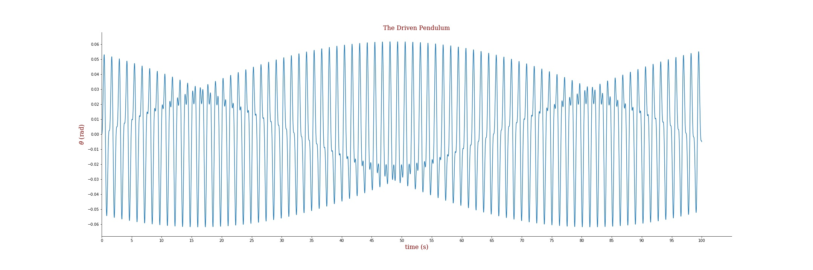
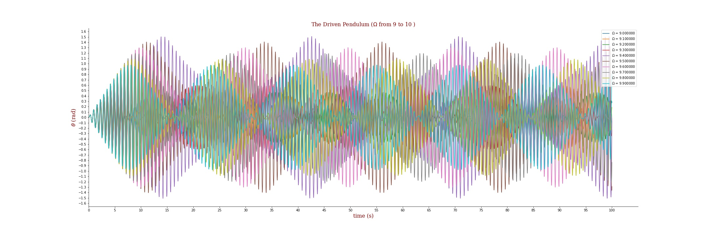
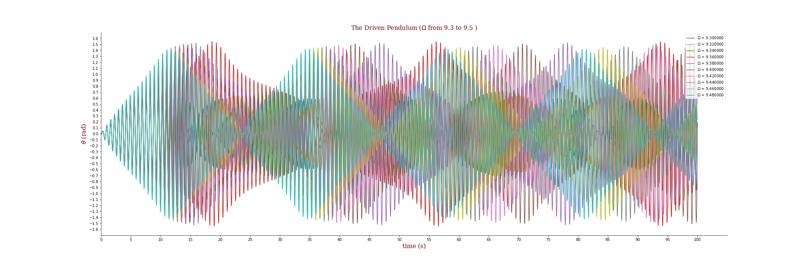

I think the first Question is quite similar to the first one of exercise 8.4. So if you've already had answer to 8.4, we only need to fix a little bit based on it.
I guess you must write an equation for 8.4 like "-g / l * math.sin(y)"
So what we need is to build a function like this:
def fun(y,t,Ome):
g = 9.80665
l = 0.1
C = 3
return -g / l * math.sin(y) + C * math.cos(y) * math.sin(Ome * t)
I put the variable Omega as a parameter for the convenience to solve the second question.
def runge_kutta(t,z,y,f,dt,Ome):
""" t is the value of time
z is the value for dy/dt
y is the value of theta
f is the function
dt is the step of time
Ome is the value of Omega
"""
k1 = z
l1 = f(y,t, Ome)
k2 = z + dt/2 * l1
l2 = f(y + dt/2*k1, t+ dt/2, Ome)
k3 = z + dt/2 * l2
l3 = f(y + dt/2*k2, t+ dt/2, Ome)
k4 = z + dt * l3
l4 = f(y + dt* k3, t + dt, Ome)
z_n = z + dt * (l1 + 2*l2 + 2*l3 + l4)/6.
y_n = y + dt * (k1 + 2*k2 + 2*k3 + k4)/6.
ys.append(y_n) //add y into list for plot
zs.append(z_n) // add z into list for plot
I think it may be an awful one to read......If you have any question about this, just ask me.
t = 0.
y = 0.
z = 0.
dt = .01
ys,zs,ts = [],[],[]
ys.append(y)
zs.append(z)
ts.append(t)
count = 0
while t <= 100:
y = ys[count]
z = zs[count]
Ome = 5
runge_kutta(t,z,y,fun,dt, Ome)
t += dt
ts.append(t)
count += 1
plt.plot(ts,ys,label=Ome)
ys,zs,ts = [],[],[]
plt.xlim(0,105)
plt.xticks(np.linspace(0,100,21,endpoint=True))
plt.yticks(np.linspace(-0.06,0.06,13,endpoint=True))
ax = plt.gca()
ax.spines['right'].set_color('none')
ax.spines['top'].set_color('none')
font = {'family': 'serif',
'color': 'darkred',
'weight': 'normal',
'size': 16,
}
plt.title('The Driven Pendulum', fontdict=font)
plt.ylabel(r'$\theta$ (rad)', fontdict=font)
plt.xlabel('time (s)', fontdict=font)
plt.savefig('D:\\Others\\test.jpg')
And here is the plot

To be honest, I didn't know the precision of Omega required for this question. So I guess one
At first I think the value of omega was near the value of angular velocity of the Pendulum. But I was not sure, so I plot omega from 0 to 15, with interval of 0.5, then got a plot below.
Oh.. Forgot to paste the script of code here.
We only need to fix the code of the figure drawing part.
plt.figure(figsize=(30,10))
for x in np.arange(0,15,0.5):
t = 0.
y = 0.
z = 0.
dt = .01
ys,zs,ts = [],[],[]
ys.append(y)
zs.append(z)
ts.append(t)
count = 0
while t <= 100:
y = ys[count]
z = zs[count]
Ome = x
runge_kutta(t,z,y,fun,dt, Ome)
t += dt
ts.append(t)
count += 1
plt.plot(ts,ys,label=r'$\omega$ = %f' %Ome)
ys,zs,ts = [],[],[]
plt.xlim(0,105)
plt.xticks(np.linspace(0,100,21,endpoint=True))
plt.yticks(np.linspace(-1.6,1.6,33,endpoint=True))
ax = plt.gca()
ax.spines['right'].set_color('none')
ax.spines['top'].set_color('none')
plt.legend(loc='upper right')
font = {'family': 'serif',
'color': 'darkred',
'weight': 'normal',
'size': 16,
}
plt.title('The Driven Pendulum', fontdict=font)
plt.ylabel(r'$\theta$ (rad)', fontdict=font)
plt.xlabel('time (s)', fontdict=font)
plt.savefig('D:\\Others\\test.jpg')
Then we figured out that when omega got to value like 9.5, which is quite near the value of angular velocity of the Pendulum (9.8995 = sqrt(g/l))
Next few steps made the omega more precise.   And till now I think maybe Omega=9.36 is the answer, for the maximum of theta is near 1.6 (pi/2 = 1.57)
I couldn't confirm the correctness of my answer, maybe something was wrong with my answer so you need to check it out.
This page is for you Annabelle, as a certificate of friendship haha.